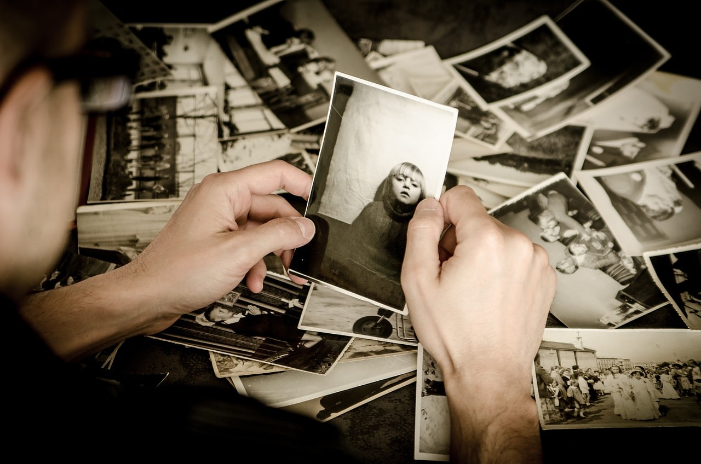

Fotografia retrato nasceu no século XIX como uma evolução da pintura de retratos, permitindo registrar a identidade, a memória e a posição social das pessoas de forma acessível.
Tradicional: Foco no rosto e nos ombros com o olhar direcionado para a câmera. Espontâneo: Captura a pessoa de forma natural, sem poses rígidas. Ambiental: Mostra o indivíduo em um local familiar ou importante para a história dele.